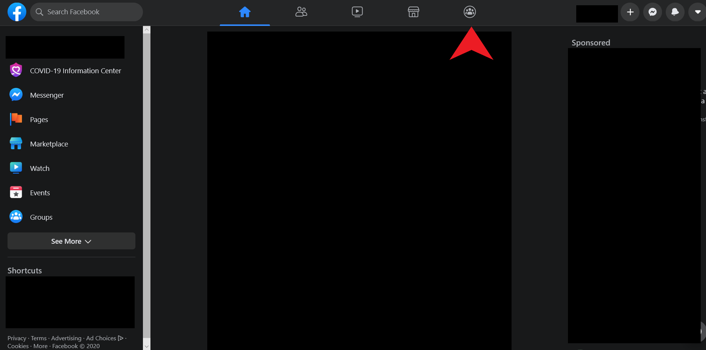
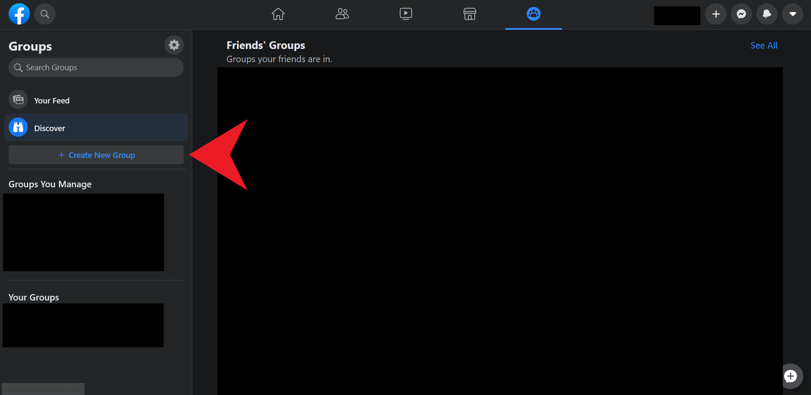
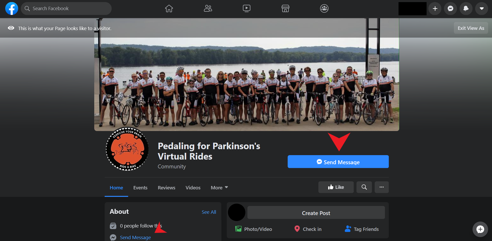

Creating a PFP group
If you can't find any groups you like on the facebook page, or want to take more of a leadership role, you might consider creating a group. Creating a Pedaling for Parkinson's group is quite simple, and this page will break down the steps on how to do it. Similarly to joining a group, this will require a facebook account. To start, go to facebook.com. If you already have an account, log in at the top. If not, enter your information in the large Sign up Section.
Above is the homepage of facebook. First, you'll need to navigate to the groups tab, indicated by the red arrow near the top of the screen. Click on this, and you'll be taken to the groups page.
Now that we've arrived at the group page, you will need to create your own group. To do this, click on the button indicated by the red arrow. This will prompt you to enter a group name, invite friends, and decide whether the group will be public or private. For the name, we recommend something descriptive, so people can easily get a sense for your group. For friends, you can invite whoever you wish, this is not a huge concern. In regards to whether to make the group public or private, we recommend private. This will prevent people from joining unless you approve them, meaning people who might want to mess with others in this community will have a more difficult time joining the group. However, this is your decision.
Now, you need to get the group linked to the main facebook page so everyone can find it. To do this, go to the main page, and send a message to the page. In the image above, the red arrows point to two places on the page which allow you to send a message to the page. This message should include a link for the group you've just made. The administrator will have to link this themselves.